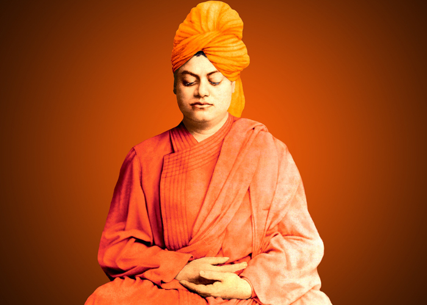

Swami Vivekanada
[1863-1902]
आत्मनो मोक्षार्थम् जगत् हिताय च
~ For one's own salvation and for the welfare of the world ~
Introduction
From a simple, unassuming monk in Calcutta who had reached the culmination of spiritual experience in the 1890s to the propounder of Hinduism and Vedanta on the global stage at the Parliament of Religions in Chicago in 1893, as well as the inspirer of thousands in different parts of the globe subsequently, Vivekananda is a household name today. His spiritual brilliance, absolute purity, vast learning, love for humanity, sympathy for the suffering and a hundred other noble qualities have made him a universal symbol of spiritual unfoldment of the human race and an inspiration not only for the youth, but for everyone—from the erstwhile leaders of India to world thinkers, from the unlettered peasant to the learned pundit, from little children to the advancing in age.
Apart from rousing the sleeping and suffering India, he travelled extensively and awakened the enlightened people of advanced nations to lead a spiritual life so as to attain inner peace, established the Ramakrishna Math and the Ramakrishna Mission, founded journals, established monasteries, wrote books, inspiring letters and articles, gave classes and discourses, gave interviews, trained young men, and did a thousand other things for the good of humanity. In short, he changed the course of human civilization—from an earth-bound, dark, miserable, pleasure-seeking, soul-less culture to a bright, spiritual civilization. All within the 39 years of his extraordinary life!
Selected Teachings of Swami Vivekananda
- My ideal, indeed, can be put into a few words, and that is: to preach unto mankind their divinity, and how to make it manifest in every moment of life.
- Education is the manifestation of the perfection already in man.
- We want that education by which character is formed, strength of mind is increased, the intellect is expanded, and by which one can stand on one's own feet.
- So long as the millions live in hunger and ignorance, I hold every man a traitor who, having been educated at their expense, pays not the least heed to them.
- Whatever you think, that you will be. If you think yourselves weak, weak you will be; if you think yourselves strong, strong you will be.
- If you have faith in all the three hundred and thirty millions of your mythological gods, and still have no faith in yourselves, there is no salvation for you. Have faith in yourselves, and stand up on that faith and be strong; that is what we need.
- Strength, strength it is that we want so much in this life, for what we call sin and sorrow have all one cause, and that is our weakness. With weakness comes ignorance, and with ignorance comes misery.
- You cannot believe in God until you believe in yourself.
- Arise! Awake! and stop not until the goal is reached.
- That man has reached immortality who is disturbed by nothing material.
- The whole secret of existence is to have no fear. Never fear what will become of you, depend on no one. Only the moment you reject all help are you freed.
- The Vedanta recognizes no sin it only recognizes error. And the greatest error, says the Vedanta is to say that you are weak, that you are a sinner, a miserable creature, and that you have no power and you cannot do this and that.
- All differences in this world are of degree, and not of kind, because oneness is the secret of everything.
- The will is not free - it is a phenomenon bound by cause and effect - but there is something behind the will which is free.
- Do not lower your goals to the level of your abilities. Instead, raise your abilities to the height of your goals.
- As long as we require someone else to make us happy, we are slaves.
- Strength is Life, Weakness is Death. Expansion is Life, Contraction is Death. Love is Life, Hatred is Death.
- All the powers in the universe are already ours. It is we who have put our hands before our eyes and cry that it is dark.
- God is to be worshipped as the one beloved, dearer than everything in this life and the next.
- Our duty is to encourage every one in his struggle to live up to his own highest ideal, and strive at the same time to make the ideal as near as possible to the Truth.
- You have to grow from the inside out. None can teach you, none can make you spiritual. There is no other teacher but your own soul.
- We are what our thoughts have made us; so take care about what you think. Words are secondary. Thoughts live; they travel far.
- Condemn none: if you can stretch out a helping hand, do so. If you cannot, fold your hands, bless your brothers, and let them go their own way.
- If money help a man to do good to others, it is of some value; but if not, it is simply a mass of evil, and the sooner it is got rid of, the better.
- The essence of education is the concentration of mind, not the collecting of facts. Develop the power of concentration and detachment and then with a perfect instrument collect facts at will.
- Purity, patience, and perseverance are the three essentials to success, and above all, love.
- The power of concentration is the only key to the treasure house of knowledge.
- When the world is the end and God is the means to attain that end, that is material. When God is the end and the world is only a means to that end, Sprituality has begun.
- Religion is realization; not talk, not doctrine, nor theories, however beautiful they may be. It is being and becoming, not hearing or acknowledging; it is the whole soul becoming changed into what it believes.
- Religion is the manifestation of the Divinity already in man.
- We want to get everything from nature, but we find in the long run that nature takes everything from us - depletes us and casts us aside.
- The world is the great gymnasium where we come to make ourselves strong.
- Teach yourselves, teach everyone his real nature, call upon the sleeping soul and see how it awakes. Power will come, glory will come, goodness will come, purity will come, and everything that is excellent will come when this sleeping soul is roused to self-conscious activity.
- They alone live who live for others, the rest are more dead than alive.
- This is the gist of all worship – to be pure and to do good to others.
- It is love and love alone that I preach, and I base my teaching on the great Vedantic truth of the sameness and omnipresence of the Soul of the Universe.
I have come here to pay my homage and respect to the revered memory of Swami Vivekananda, whose birthday is being celebrated today. I have gone through his works very thoroughly, and after having gone through them, the love that I had for my country became a thousand-fold. I ask you, young men, not to go away empty-handed without imbibing something of the spirit of the place where Swami Vivekananda lived and died.
- Mahatma Gandhi

Image Source here
Further Reading
WikiPedia's Link
Ramakrishna Mission Weblink
The Complete Works of Swami Vivekananda
~* Page made with by RM09 *~